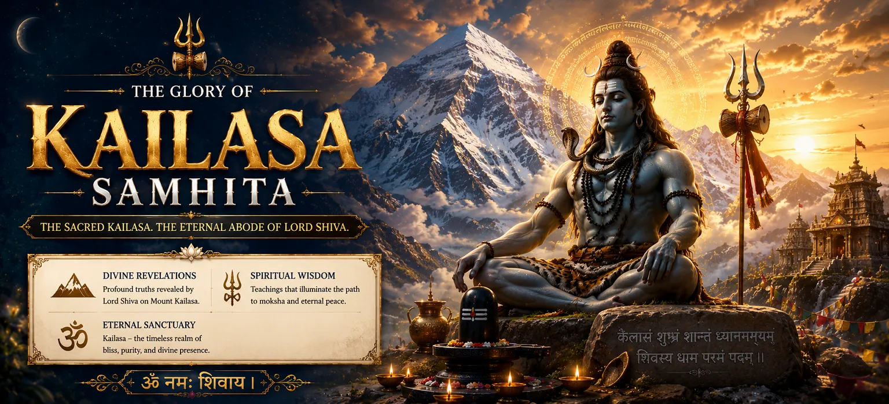

Welcome to Kailasa Samhita
কৈলাস সংহিতায় আপনাকে স্বাগতম
Kailasa Samhita is the sixth sacred section of the Shiva Purana in the seven-Samhita edition followed on Bholenath Dham. Rather than presenting a long sequence of divine legends, it turns the reader inward. Its twenty-three chapters examine the meaning of renunciation, the discipline of a sannyasin, the mystery of Pranava, the worship of Lord Shiva, initiation, nyasa and the non-dual nature of Shiva.
The name Kailasa evokes Shiva's stainless abode and the summit of spiritual awareness. Within this Samhita, that summit becomes a symbol of freedom from possessiveness, ego and ignorance. The seeker is guided from outer discipline to mental worship, from sacred sound to knowledge, and from formal initiation to an awakened understanding of Shiva as the reality present within all existence.
Kailasa Samhita at a Glance
23 Sacred Chapters
২৩টি পবিত্র অধ্যায়
A focused journey through renunciation, Pranava, worship, initiation and ascetic rites.
Wisdom of Pranava
প্রণবের জ্ঞান
The sacred syllable Om is contemplated as an expression and revelation of Shiva.
Outer and Inner Worship
বাহ্য ও মানসপূজা
Ritual worship is joined with remembrance, meditation and inward offering.
Path of Renunciation
সন্ন্যাসের পথ
The duties and disciplines of the sannyasin are explained with spiritual purpose.
Initiation and Nyasa
দীক্ষা ও ন্যাস
Sacred preparation transforms the disciple's body, speech and mind into instruments of worship.
Non-Dual Shiva
অদ্বৈত শিবতত্ত্ব
The culmination is insight into Shiva as the undivided reality beyond limitation.
The Spiritual Scope of Kailasa Samhita
The Samhita opens through a discussion involving Vyasa, Shaunaka and other sages before moving into a divine dialogue. These opening chapters establish the authority and purpose of the teaching: liberation requires more than intellectual curiosity. It calls for humility, qualified guidance, disciplined conduct and a sincere willingness to surrender the habits that bind the mind.
Its central chapters describe sannyasa and the daily life of the renunciant, including the ascetic's mystic diagram, nyasa and prescribed modes of Shiva worship. These instructions belong to a formal sacred discipline, yet their inner principles speak to every seeker: simplify life, purify intention, restrain harmful impulses and dedicate thought and action to the Divine.
The teaching then deepens through mental worship and the interpretation of Pranava. Om is not presented merely as a sound to repeat but as a doorway to contemplate Shiva's nature. Through the accounts of Suta and the Brahmin Vamadeva, the text connects sacred instruction, direct realization and the transmission of wisdom from teacher to disciple.
Six Pillars of the Sacred Teaching
Pranava
প্রণব
Contemplation of Om as Shiva's sacred expression.
Sannyasa
সন্ন্যাস
Freedom through detachment, restraint and spiritual purpose.
Shiva Puja
শিবপূজা
Worship that unites sacred form with inner devotion.
Diksha
দীক্ষা
The disciple's consecrated entrance into spiritual discipline.
Nyasa
ন্যাস
Consecrating the body and awareness through sacred placement.
Advaita
অদ্বৈত
Recognizing Shiva as the one reality within all beings.
Chapters of Kailasa Samhita → Part 1
Begin with the dialogue of the sages and the goddess before entering the disciplined life of renunciation, nyasa, formal worship and Shiva's inward adoration.
Outer and Inner Worship
বাহ্য ও অন্তরের উপাসনা
Understand how ritual, remembrance and mental offering support one spiritual purpose.
📿 Explore the ThemeChapters of Kailasa Samhita → Part 2
Continue through Pranava, Suta's instruction, Vamadeva's wisdom, the procedures of renunciation and the revelation of Shiva's principle.
Understanding Pranava
প্রণবকে বোঝা
Explore why Om is contemplated as sacred sound, divine symbol and a doorway to Shiva-consciousness.
🕉️ Explore the TeachingChapters of Kailasa Samhita → Part 3
The concluding chapters reveal Shiva's non-dual nature, the initiation of a disciple and the rites by which the ascetic community honors a departed yati.
Chapter 21
Duties and Rites Through the Tenth Day After an Ascetic's Passing
📖 Read ChapterUnderstanding the Ascetic Rites
সন্ন্যাসীদের ক্রিয়াবিধি বোঝা
Learn how the concluding rites express continuity, reverence and the dignity of the renounced life.
🙏 Explore the ContextContinue to Vayaviya Samhita
বায়বীয় সংহিতায় অগ্রসর হোন
Continue the Shiva Purana through cosmology, sacred knowledge, devotion and Shiva's supreme nature.
📖 Open Vayaviya SamhitaFrom Ritual Worship to Mental Worship
Kailasa Samhita honors formal worship while directing attention toward its inner meaning. Water, flowers, mantra and sacred gestures train the senses in reverence; mental worship carries the same offering into the heart. When outward action and inward awareness become harmonious, worship is no longer confined to a particular place or hour—daily life itself becomes an offering to Shiva.
Renunciation as Inner Freedom
The Samhita gives detailed attention to the formal life of the sannyasin, but its deepest insight reaches beyond external identity. True renunciation is the loosening of possessiveness, pride and compulsive desire. It is not indifference to the world; it is the freedom to act without being ruled by fear, reward or ego.
Householders should not imitate rites reserved for initiated ascetics without qualified guidance. They can, however, embrace the universal disciplines those rites protect: truthfulness, moderation, compassion, remembrance of Shiva, responsible duty and the willingness to release what obstructs spiritual growth.
Initiation, Lineage and the Ascetic Community
Qualified Guidance
যোগ্য পথনির্দেশ
A genuine teacher helps the disciple distinguish discipline from imitation and knowledge from pride.
Sacred Initiation
পবিত্র দীক্ষা
Initiation marks commitment to a path, its responsibilities and the transmission of sacred understanding.
Continuity of Tradition
পরম্পরার ধারাবাহিকতা
The concluding rites honor the departed ascetic while sustaining memory, gratitude and community.
Spiritual Benefits of Reading Kailasa Samhita
Deeper Contemplation
গভীর মনন
Purified Intention
বিশুদ্ধ উদ্দেশ্য
Greater Self-Control
আত্মসংযমের বিকাশ
Sacred Understanding
পবিত্র উপলব্ধি
Inner Simplicity
অন্তরের সরলতা
Vision of Oneness
একত্বের দৃষ্টি
How to Read Kailasa Samhita
Read the chapters sequentially because the Samhita progresses from questions and foundational dialogue to discipline, Pranava, worship, philosophical realization and initiation. Keep a small notebook for unfamiliar terms such as sannyasa, nyasa, Pranava, yogapatta and yati. Understanding their context will prevent sacred technical instructions from being reduced to vague symbolism.
Approach formal ascetic procedures respectfully. They record the responsibilities of a consecrated life and are not casual practices to copy without a competent guru. For personal reflection, draw out the universal lesson behind each chapter: simplify, remember Shiva, examine the ego, act truthfully, honor the teacher and transform worship into awareness.
Spiritual Reflection
আধ্যাত্মিক ভাবনা
The highest Kailasa is approached whenever the mind rises above possessiveness, distraction and pride. Renunciation clears the path, Pranava gathers the awareness, devotion warms the heart and knowledge reveals that the Shiva we seek is never absent from the seeker.
Frequently Asked Questions
① What is Kailasa Samhita?
Kailasa Samhita is the sixth section of the seven-Samhita Shiva Purana. It concentrates on Pranava, sannyasa, Shiva worship, initiation, non-dual knowledge and the sacred life of ascetics.
② How many chapters does Kailasa Samhita contain?
The edition followed for this chapter directory contains twenty-three chapters. Other manuscript traditions may organize Shiva Purana material differently.
③ Is Kailasa Samhita mainly about Mount Kailasa?
No. Although its name evokes Shiva's sacred abode, its chapters primarily concern renunciation, Pranava, worship, initiation, Shiva's non-dual nature and ascetic observances.
④ What is Pranava?
Pranava is Om, the primordial sacred syllable. Kailasa Samhita interprets it in relation to Shiva and presents it as a profound support for contemplation and realization.
⑤ Can householders benefit from this Samhita?
Yes. Formal ascetic rites require appropriate initiation and guidance, but every reader can learn from the Samhita's universal values of restraint, simplicity, devotion, inner worship and freedom from ego.
⑥ Why do the final chapters discuss rites for departed ascetics?
These chapters preserve the responsibilities of the ascetic community after a yati's passing. The rites express reverence, continuity of lineage and the sacred dignity attributed to a life of renunciation.
“When outward noise is renounced, Pranava becomes clear within the heart, and the seeker recognizes Shiva as the undivided light of awareness.”
Begin Your Journey Through Kailasa Samhita
Having completed Uma Samhita, enter the contemplative discipline of Kailasa Samhita. Begin with the sages' discussion and proceed chapter by chapter through renunciation, Pranava, worship, initiation and non-dual knowledge.